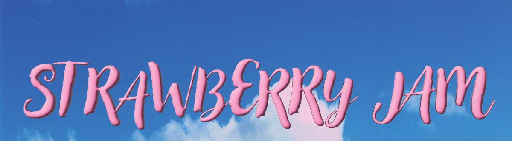

Strawberry Jam is the dazzling debut album from FIZZ, a rising pop quartet known for their infectious energy and kaleidoscopic sound. Formed by four childhood friends with a shared love of playful melodies and bold experimentation, FIZZ quickly built a reputation for blending glossy pop hooks with unexpected twists. Their music thrives on contrasts—bright synths paired with heartfelt lyrics, danceable beats underscored by moments of vulnerability.
Tracklist
- 1. Sugar Rush
- 2. Velvet Skies
- 3. Sticky Fingers
- 4. Golden Hour Glow
- 5. Seeds of Love
- 6. Bittersweet Bite
- 7. Jam Session
- 8. Crimson Carousel
- 9. Glass Jar Memories
- 10. Spread the Love
Song previews play in loop until you hit pause